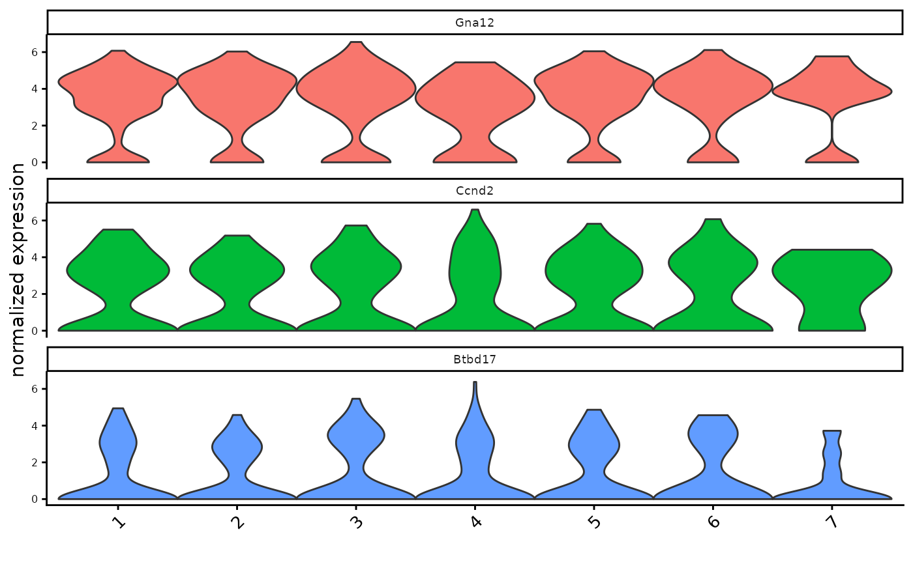

Creates violinplot for selected clusters
Usage
violinPlot(
gobject,
spat_unit = NULL,
feat_type = NULL,
expression_values = c("normalized", "scaled", "custom"),
feats = NULL,
cluster_column,
cluster_custom_order = NULL,
color_violin = c("feats", "cluster"),
cluster_color_code = NULL,
strip_position = c("top", "right", "left", "bottom"),
strip_text = 7,
axis_text_x_size = 10,
axis_text_y_size = 6,
show_plot = NULL,
return_plot = NULL,
save_plot = NULL,
save_param = list(),
default_save_name = "violinPlot"
)Arguments
- gobject
giotto object
- spat_unit
spatial unit (e.g. "cell")
- feat_type
feature type (e.g. "rna", "dna", "protein")
- expression_values
expression values to use (e.g. "normalized", "scaled", "custom")
- feats
features to plot
- cluster_column
name of column to use for clusters (e.g. "leiden_clus")
- cluster_custom_order
custom order of clusters
- color_violin
color violin according to "genes" or "clusters"
- cluster_color_code
color code for clusters
- strip_position
position of gene labels (e.g. "top", "right", "left", "bottom")
- strip_text
size of strip text
- axis_text_x_size
size of x-axis text
- axis_text_y_size
size of y-axis text
- show_plot
logical. show plot
- return_plot
logical. return ggplot object
- save_plot
logical. save the plot
- save_param
list of saving parameters, see
showSaveParameters- default_save_name
default save name for saving, don't change, change save_name in save_param
Examples
g <- GiottoData::loadGiottoMini("visium", verbose = FALSE)
violinPlot(g, feats = c("Gna12", "Ccnd2", "Btbd17"),
cluster_column = "leiden_clus")
